4420D42 REAR SUSPENSION CROSSMEMBER - R.R. - CHECK WHEEL GEOMETRY SEPARATELY
- Path
- Procedures > 44 SUSPENSION AND WHEELS > 4420 REAR SUSPENSION > 4420D REAR SUSPENSION AXLE/CROSSMEMBER > 4420D42 REAR SUSPENSION CROSSMEMBER - R.R. - CHECK WHEEL GEOMETRY SEPARATELY
- Kind
- repair procedure (removal / refitting; the operation number is the code)
- Applies to
- all engines; all production periods
- Interactive page
- https://sloeber94.github.io/elrnDB-aBrrSpdr/en/#/946002217
Applies to: engines: 3.2 JTS; all production periods
 Removing
Removing
 Refitting
RefittingOp. 4450B13 REAR WHEELS (TWO) - R.R
1. Unscrew the plug and drain the rear differential fluid into a special container.
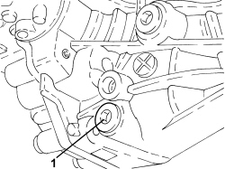
Applies to: engines: 3.2 JTS; all production periods
1. Loosen the collar fastening the front silencer to the catalyzer assembly.
2. Disconnect the front exhaust silencer from the flexible support mounting.
3. Disconnect the two rear silencers from the flexible mountings.
4. Remove the exhaust silencer assembly.
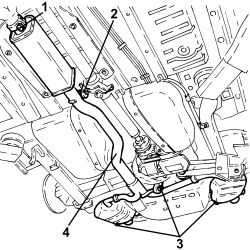
Applies to: engines: 3.2 JTS; all production periods
1. Unscrew the propeller shaft rear mount bolts to the body and recover any alignment spacers.
2. Mark the position of the constant velocity joint with the RDA flange, unscrew the bolts securing the propeller shaft to the RDA and move aside, securing it to the body.

Applies to: engines: 3.2 JTS; all production periods
1. Unscrew bolts (1a) and remove rear suspension beam reinforcement bracket (1b).
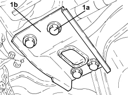
Applies to: engines: 3.2 JTS; all production periods
Op. 2720C84 REAR DIFFERENTIAL TO CROSSMEMBER MOUNTING BRACKET - R.R.
1. Undo the nuts (1a) and remove rear silencer heat shield (1b), left side.

Applies to: engines: 3.2 JTS; all production periods
1. Disconnect the handbrake cable from the brake caliper.
2. Undo the bolts (2a) fixing the brake caliper bracket (2b) to the stub axle.

Applies to: engines: 3.2 JTS; all production periods
1. Undo the upper bolt fixing the stub axle to the rear suspension upper transverse arm.
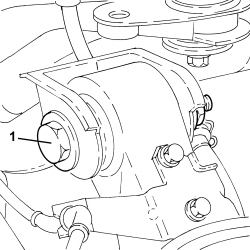
Applies to: engines: 3.2 JTS; all production periods
1. Loosen the bolt (1a) and undo the bolt (1b) fixing the lower stub axle (1c) to the longitudinal arm.
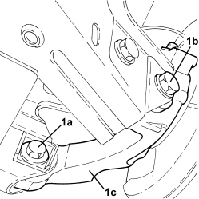
Applies to: engines: 3.2 JTS; all production periods
1. Undo the bolt (1a) securing the wheel rpm sensor (1b) to the stub axle.

Applies to: engines: 3.2 JTS; all production periods
- Prise the half-axle out out of the differential.
1. Remove the steering knuckle hub complete with half-axle.
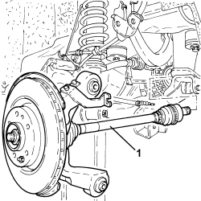
Applies to: engines: 3.2 JTS; all production periods
- Proceed in the same way to remove the other wheel stub axle assembly complete with half-axle.
- Position a hydraulic jack fitted with a suitable tool and support the rear differential.
1. Undo the bolts (1a) securing the rear differential (1b) to the suspension crossmember and remove it.
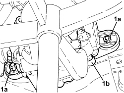
Applies to: engines: 3.2 JTS; all production periods
Op. 4420C10 REAR SUSPENSION STABILIZER BAR - R+R
- Position a hydraulic jack fitted with a suitable tool and support the rear suspension longitudinal arm.
1. Undo the bolt fixing the shock absorber to the rear suspension longitudinal arm.
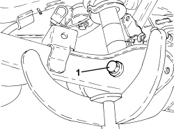
Applies to: engines: 3.2 JTS; all production periods
1. Unscrew the bolts and remove brackets (1a) securing the handbrake cables (1b) and move aside.
2. Undo the bolts fixing the rear suspension longitudinal arm to the bodyshell.

Applies to: engines: 3.2 JTS; all production periods
1. Unscrew bolt (1a) and remove the rear suspension longitudinal arm (1b).
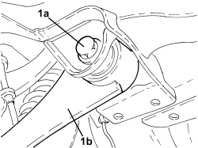
Applies to: engines: 3.2 JTS; all production periods
- Position a hydraulic jack fitted with a suitable tool and support the rear suspension beam.
1. Disconnect the electrical connection of the headlamp alignment sensor.
2. Undo the bolts (2a) and remove the rear suspension beam (2b).
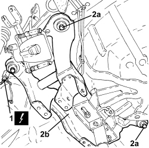
Applies to: engines: 3.2 JTS; all production periods
Refitting
Removing- Assembly both longitudinal arms with the rear suspension beam without tightening the bolts to torque.
- Fit the locating tool on the lift hydraulic jack.
Tool | Description | Function | Validity |
|---|---|---|---|
2000002400 | Centring tool | Rear suspension crossmember support |
Tool | Description | Function | Validity |
|---|---|---|---|
1870835001 | Hydraulic lift | Rear suspension crossmember support |
- If the above hydraulic lift is not available, use a general hydraulic lift plus the adaptor shown in the drawing, which must be made up by the workshop to allow the use of the above frames

Applies to: engines: 3.2 JTS; all production periods
- Position the longitudinal arm - suspension beam assembly on the locating tool pins set up previously.
-Lift and positino the rear suspension beam assembly in its seat, taking care to locate the holes on the body using the tool reference pins.
- Tighten the bolts securing the beam to the bodyshell to torque.
Component | Fastening | dia | Value (daNm) | Validity |
|---|---|---|---|---|
Body side rear suspension crossmember | Bolt (to be replaced) | M12 | 11.2 ÷ 13.7 + 45° |
- Tighten the bolts securing both longitudinal arms to the bodyshell to torque.
Component | Fastening | dia | Value (daNm) | Validity |
|---|---|---|---|---|
Body side longitudinal arm bracket | Bolt (to be replaced) | M14 | 13.5 ÷ 16.5 + 90° |
- Remove the hydraulic lift with locating tool.
- Connect the handbrake cable to the longitudinal swinging arm using the brackets.
- Use a hydraulic jack fitted with a suitable tool to position the rear differential in its seat.
- Tighten the bolts securing the rear differential to the suspension crossmember.
Component | Fastening | dia | Value (daNm) | Validity |
|---|---|---|---|---|
Rear differential - suspension crossmember side | Bolt | M12 | 9.9 ÷ 12.1 | 3.2 JTS |
Op. 4420C10 REAR SUSPENSION STABILIZER BAR - R+R
- Position the wheel stub axle with half-axle in its seat andscrew in the front bolt and rear bolt securing the suspension beam without tightening to torque.
- Position the shock absorber in its seat and screw in the bolt securing it to the longitudinal swinging arm without tightening to torque.
- Position the wheel rpm sensor in its housing and secure it using the bolt.
- Connect the transverse arm to the wheel stub axle using the bolt without tightening to torque.
- Place the bracket with the brake caliper bracket back in its housing and secure it using bolts.
- Connect the handbrake cable to the brake caliper.
Op. 2720C84 REAR DIFFERENTIAL TO CROSSMEMBER MOUNTING BRACKET - R.R.
- Place the suspension beam reinforcement bracket in its housing and secure it using the bolts.
- Connect the propeller shaft to the rear differential, aligning the reference notches made between the constant velocity joint and the RDA flange on removal.
- Tighten the bolts securing the rear constant velocity joint to the RDA, interposing half-moon washers.
Component | Fastening | dia | Value (daNm) | Validity |
|---|---|---|---|---|
Propeller shaft - rear differential side | Bolt | M10 | 5.6 ÷ 6.8 | 3.2 JTS |
- Tighten the bolts in a cross sequence.
- Position the rear propeller shaft mount in its seat, interposing any spacers taken out on removal.
- Tighten the bolts securing the propeller shaft mount to the bodyshell to the specified torque.
Component | Fastening | dia | Value (daNm) | Validity |
|---|---|---|---|---|
Body side propeller shaft rear support | Bolt | M8 | 2.2 ÷ 2.6 | 3.2 JTS |
- Position the exhaust silencer assembly in its seat, connect the mounting rings, tighten the connection collar to the catalytic converter unit.
Op. 0010T54 REAR DIFFERENTIAL FLUID - REPLACE
Op. 4450B13 REAR WHEELS (TWO) - R.R
- With the vehicle positioned on a lift and in "standard 0" or "standard A" static load conditions, tighten the following fastenings, previously screwed in, to torque.
Component | Fastening | dia | Value (daNm) | Validity |
|---|---|---|---|---|
Strut side longitudinal arm | Bolt (to be replaced) | M14 | 9.9 ÷ 12.1 + 90° |
Component | Fastening | dia | Value (daNm) | Validity |
|---|---|---|---|---|
Crossmember side longitudinal arm blade | Bolt (to be replaced) | M14 | 9.5 ÷ 11.5 + 90° |
Component | Fastening | dia | Value (daNm) | Validity |
|---|---|---|---|---|
Longitudinal arm side shock absorber | Bolt | M14 | 13.0 ÷ 16.0 |
- Finish fitting the longitudinal swinging arm with the respective toe in and camber adjustment bolts as described in the specific "wheel geometry" procedure.
- Refer to
Op. 4450A40 REAR WHEEL GEOMETRY - CHECK USING OPTICAL EQUIPMENT, INCLUDES ADJUSTMENT IF NECESSARY
Applies to: engines: 2.2 JTS, 2.4 JTD 20v; all production periods
Removing
Refitting- Position the vehicle on a lift.
Op. 4450B13 REAR WHEELS (TWO) - R.R
Op. 1076B22 REAR EXHAUST SILENCERS - LEFT OR RIGHT - R.R.
Op. 1076B30 FRONT EXHAUST SILENCER - R + R
1. Release the handbrake control cables (1a) from the intermediate fastenings (1b).
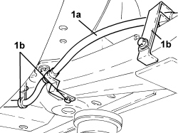
Applies to: engines: 2.2 JTS, 2.4 JTD 20v; all production periods
1. Unscrew bolts (1a) and remove the rear wheel rpm sensors (1b) from their stub axles and place to one side.

Applies to: engines: 2.2 JTS, 2.4 JTD 20v; all production periods
1. Disconnect the handbrake control cable from the rear brake calipers.
2. Undo the bolts (2a) and move the rear brake calipers (2b) to the side and secure them appropriately.
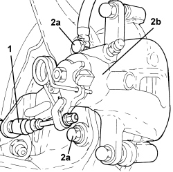
Applies to: engines: 2.2 JTS, 2.4 JTD 20v; all production periods
1.Unscrew bolts (1a) and disconnect the rear suspension shock absorbers (1b) from the rear suspension crossmember.
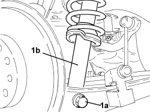
Applies to: engines: 2.2 JTS, 2.4 JTD 20v; all production periods
1. Loosen the bolts securing the longitudinal arms to the body.
2. Loosen the bolts fixing the rear suspension crossmember to the bodyshell.
3. Position a hydraulic jack (3a) fitted with tools (3b) to support the rear suspension crossmember.
Tool | Description | Function | Validity |
|---|---|---|---|
2000002400 | Mount | Rear suspension crossmember support |
- Fully unscrew the bolts loosened previously.
4. Lower the hydraulic jack slowly and remove the rear suspension crossmember assembly.
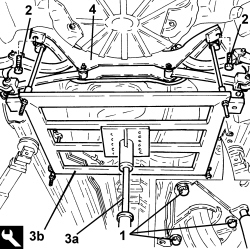
Applies to: engines: 2.2 JTS, 2.4 JTD 20v; all production periods

Applies to: engines: 2.2 JTS, 2.4 JTD 20v; all production periods
Refitting
Removing1. Place the rear suspension crossmember assembly (1c) back in its housing using the hydraulic jack (1a) and the support tool (1b).
Tool | Description | Function | Validity |
|---|---|---|---|
2000002400 | Mount | Rear suspension crossmember support |
- Screw in the bolts fixing the rear suspension crossmember to the bodyshell without tightening them.
- Screw in the bolts fixing the longitudinal arm to the bodyshell without tightening them.
- Remove the hydraulic jack and the tool used for supporting the rear suspension crossmember.
Tool | Description | Function | Validity |
|---|---|---|---|
2000002400 | Mount | Rear suspension crossmember support |
2. Tighten the new bolts fixing the rear suspension crossmember to the bodyshell to the recommended torque.
Component | Fastening | dia | Value (daNm) | Validity |
|---|---|---|---|---|
Rear suspension crossmember | Bolt (to be replaced) | M12 | (bodyshell side) 11.2 - 13.7 + 45° |
3. Tighten the bolts securing the longitudinal arms to the body to the specified torque.
Component | Fastening | dia | Value (daNm) | Validity |
|---|---|---|---|---|
Rear suspension longitudinal arm | Bolt (to be replaced) | M14 | (bodyshell side) 13.5 - 16.5 + 45° |
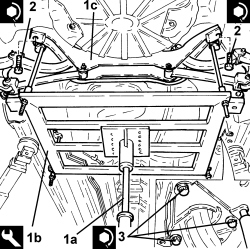
Applies to: engines: 2.2 JTS, 2.4 JTD 20v; all production periods
1. Connect the rear suspension shock absorbers (1a) to the rear suspension crossmember and tighten bolts (1b) to the specified torque.
Component | Fastening | dia | Value (daNm) | Validity |
|---|---|---|---|---|
Rear shock absorber | Bolt | M14 | (longitudinal arm side) 13.0 - 16.0 |
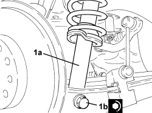
Applies to: engines: 2.2 JTS, 2.4 JTD 20v; all production periods
1. Position the rear brake caliper assemblies (1a) in their housings and secure them tightening the bolts (1b) to the recommended torque.
Component | Fastening | dia | Value (daNm) | Validity |
|---|---|---|---|---|
Rear brake calliper brackets | Bolt | M10 | 5.4 ÷ 6.0 |
2. Connect the handbrake control cable to the rear brake calipers.
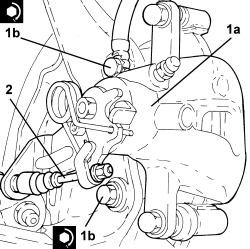
Applies to: engines: 2.2 JTS, 2.4 JTD 20v; all production periods
1. Refit the rear wheel rpm sensors (1a) in their seats on the stub axles and secure by tightening bolts (1b) to the specified torque.
Component | Fastening | dia | Value (daNm) | Validity |
|---|---|---|---|---|
Rear wheel rpm sensor | Bolt | M6 | (steering knuckle side) 0.7 - 1.1 |

Applies to: engines: 2.2 JTS, 2.4 JTD 20v; all production periods
- Secure the handbrake control cables to the intermediate fastenings.
Op. 1076B30 FRONT EXHAUST SILENCER - R + R
Op. 1076B22 REAR EXHAUST SILENCERS - LEFT OR RIGHT - R.R.
Op. 4450B13 REAR WHEELS (TWO) - R.R
- Remove the vehicle from the lift.
Topics linked from this page (7)
- 0010T54 REAR DIFFERENTIAL FLUID - REPLACE
- 1076B22 REAR EXHAUST SILENCERS - LEFT OR RIGHT - R.R.
- 1076B30 FRONT EXHAUST SILENCER - R + R
- 2720C84 REAR DIFFERENTIAL TO CROSSMEMBER MOUNTING BRACKET - R.R.
- 4420C10 REAR SUSPENSION STABILIZER BAR - R+R
- 4450A40 REAR WHEEL GEOMETRY - CHECK USING OPTICAL EQUIPMENT, INCLUDES ADJUSTMENT IF NECESSARY
- 4450B13 REAR WHEELS (TWO) - R.R